CatDex — auth & onboarding flow
17 écrans · 390×844 @2x · 2026-08-15T08:50:49.276Z
01-welcome — Welcome · entrée
/welcome
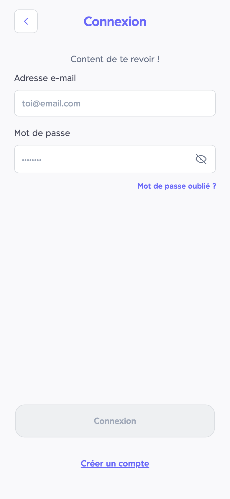
02-login — Connexion
/login
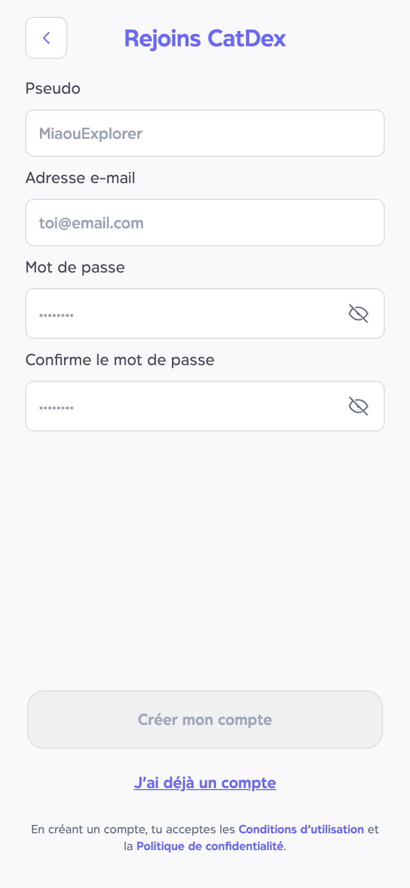
03-signup-empty — Inscription · formulaire vide
/signup
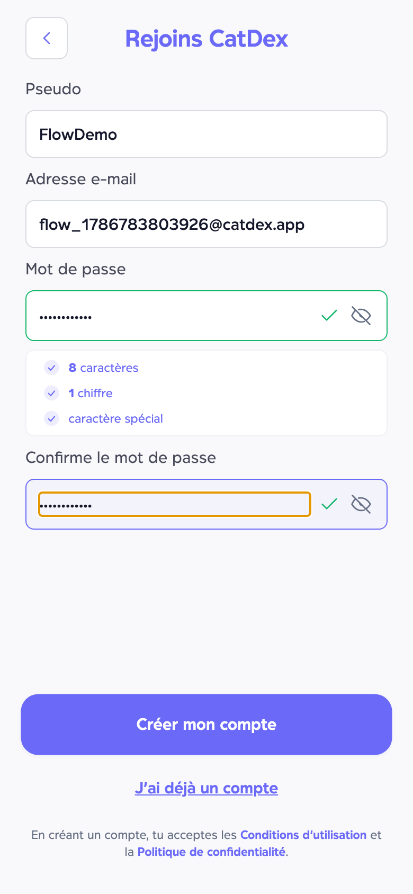
03b-signup-filled — Inscription · formulaire rempli
/signup
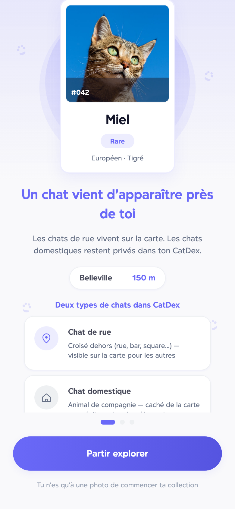
04-intro — Onboarding 1/3 · Apparition + types de chats
/intro
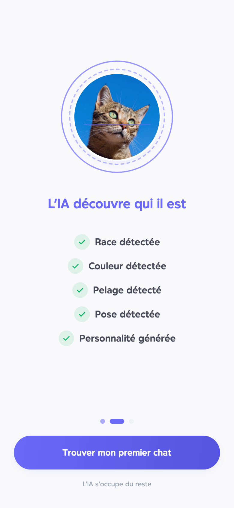
05-scan — Onboarding 2/3 · Analyse IA
/permissions
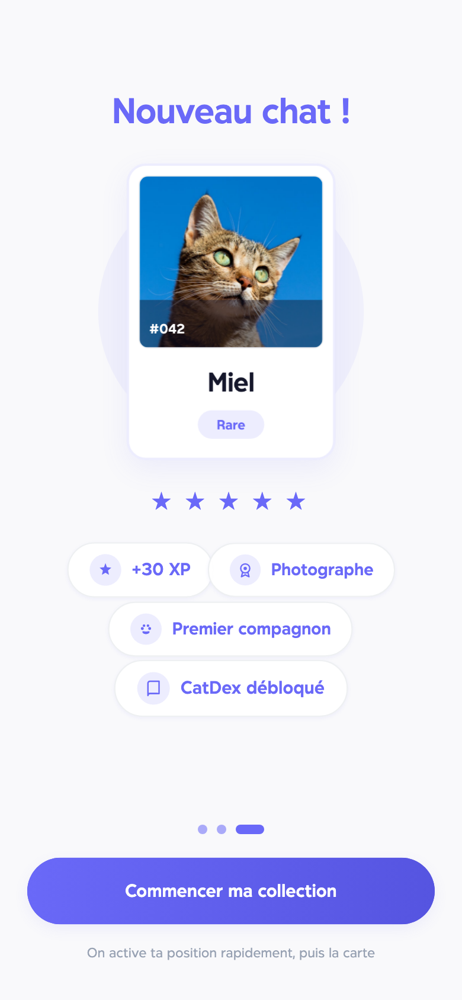
06-reward — Onboarding 3/3 · Premier chat
/onboarding-reward
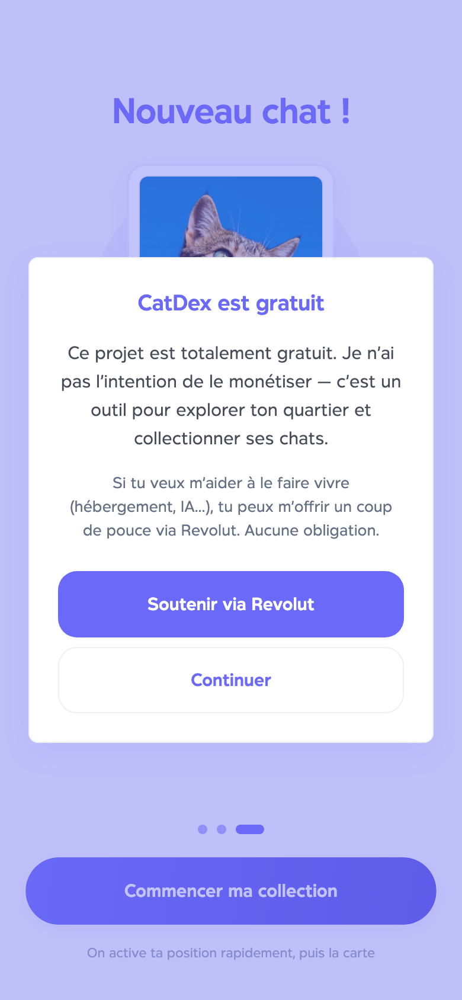
06c-support — Post-onboarding · Projet gratuit / Revolut
/onboarding-reward
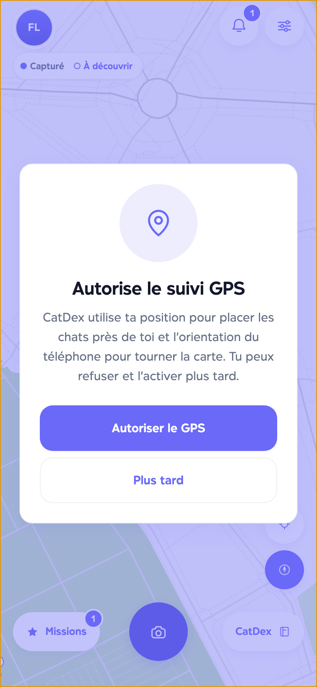
07-map — Explorer · carte
/map
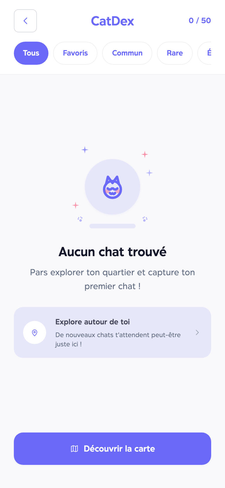
08-catdex — CatDex · collection
/catdex
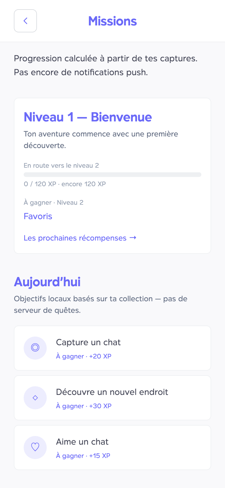
09-missions — Missions
/missions
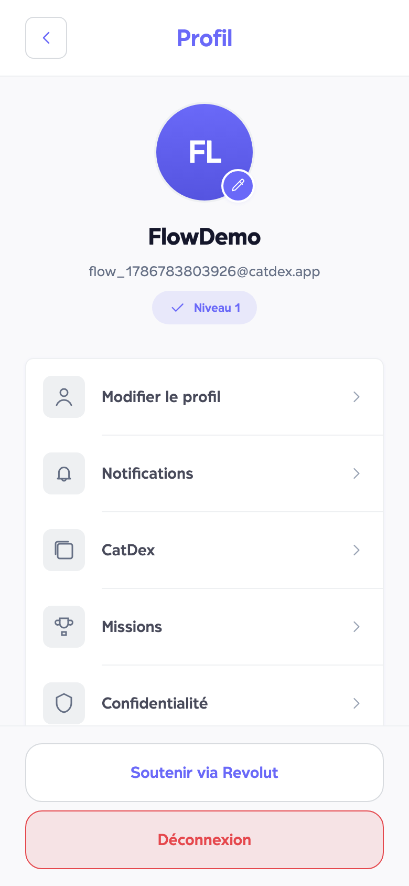
10-profile — Profil (+ Soutenir via Revolut)
/profile
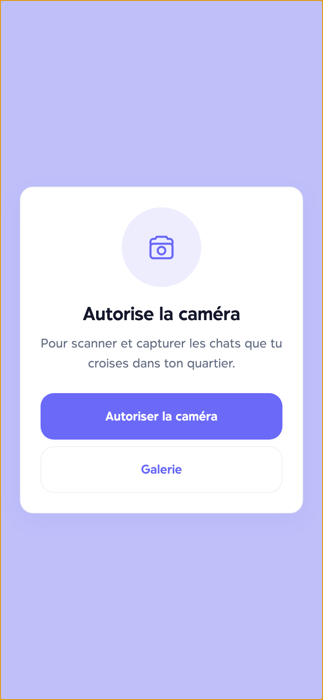
11-scanner — Scanner
/scanner
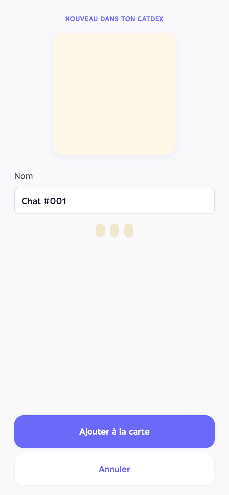
12-discovery — Discovery
/discovery
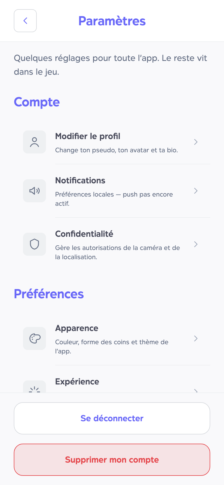
13-settings — Réglages
/settings
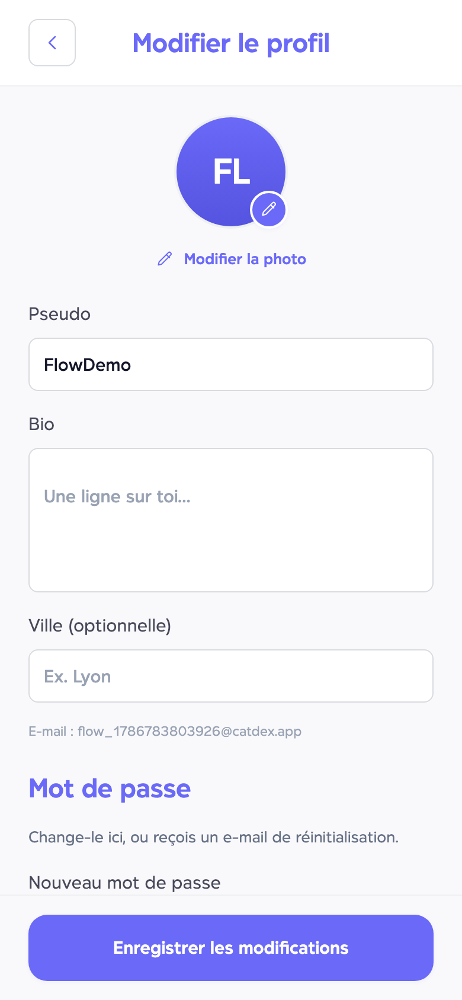
14-settings-profile — Réglages · Éditer profil
/settings/edit-profile
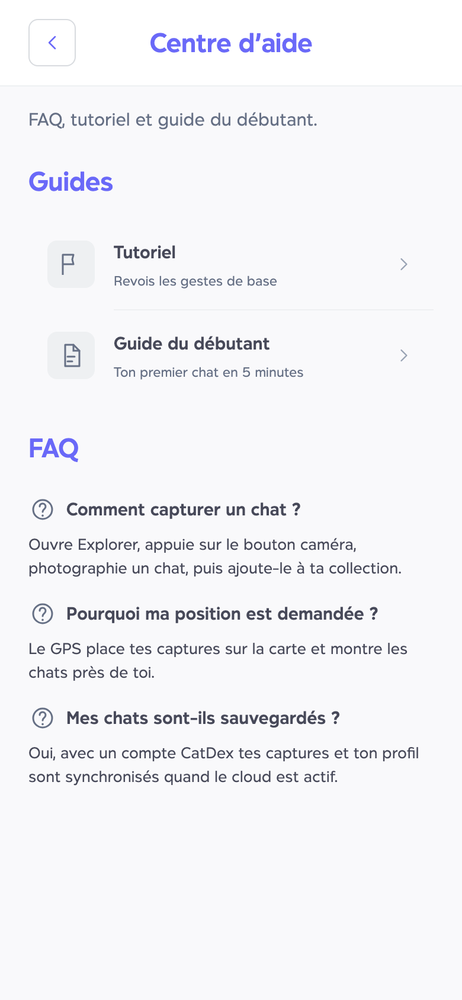
15-settings-help — Réglages · Aide
/settings/help